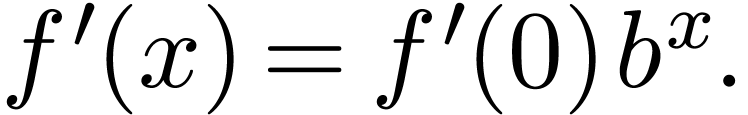
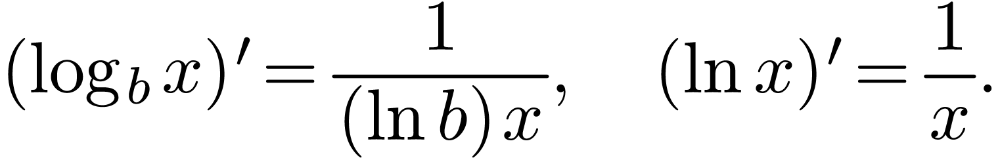
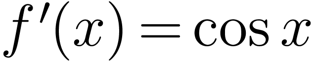

Let . For small change , let be the change in , respectively. Let be the change in .

|
1Derivatives of Polynomials and Exponential Functions 1
1.1Power functions 1
1.2Linear combination 2
1.3Exponential functions 2
2The Product and Quotient Rules 3
2.1The product rule 3
2.2The quotient rule 4
3Derivatives of Trigonometric Functions 4
Derivative of 4
4The Chain Rule 5
5Implicit differentiation 6
6Derivatives of Logarithmic Functions 8
6.1Logarithmic differentiation 8
7Rates of Change in the Economics and Social Sciences 9
8skip 9
9skip 9
10Linear Approximations and Differentials 9
10.1Linear approximations 9
10.2Differentials 10
If , where is a constant. Then
If , then
If , then
In general, if , then
Hint: use the binomial expansion
where
The above results can be generalized to .
From this result we can find the derivative of any polynomial.
Example
Let . Then
In fact,
if it exists, and

In fact,
In particular,
Question
Click Here to see a proof that the limit of the sequence exists as .
The relative rate of change of a function is
and the percentage rate of change is
Motivation: How to find the derivative function of ?
Proof. From the definition,
Intuitive explanation
|
Let . For small change , let be the change in , respectively. Let be the change in .
|
Example
If , find .
Find the th derivative, .
Repeat this process one more time, we get
In general
Exercise
Exercise
Example

By the definition
|
First, assume
By the squeeze theorem, we have
|
For your record
Using the quotient rule, we can find the derivatives of other trigonometric functions.
Exercise
Motivation: If , then
Another way to say this. Suppose is a function of , which is differentiable at , and is a function of , which is differentiable at , then is a function of , which is differentiable at , and
Proof. By the definition,
Example
Answer: , where .
Example
Answer:
Generalization: For example,
Example  if
if
Motivation: How to find if ?
Example  if
.
if
.
Answer: Taking on both sides of the equation (suppose is a function of ):
For this example, we can solve for and double check the answer.
Example
|

Using the properties
and implicit differentiation, one can simplify the differentiation of some functions.
Example
Answer: First, take on both sides.
Then take on both sides,
Remark
Example
Answer:
Read the slides.
skip
Suppose is differentiable at , then
is called the linear approximation of . And the linear function
is called the linearization of .
|
Example Answer: Let . Then
|
Example
Answer: Let , then ,
Python 3.9.6
[/Library/Developer/CommandLineTools/usr/bin/python3]
Python plugin for TeXmacs.
Please see the documentation in Help -> Plugins ->
Python
>>> |
4.1**0.5 |
2.0248456731316584
>>> |
3.99**0.5 |
1.997498435543818
>>> |
math.sin(0.2) |
0.19866933079506122
>>> |
Example
Answer: Let . Then .
>>> |
29**(1/3) |
3.072316825685847
>>> |
83/27 |
3.074074074074074
Suppose  is differentiable at
, then
is differentiable at
, then
where we call differentials.
Example
Answer: Let denote the radius and volume. Then
Then
Then
The relative change of the volume is